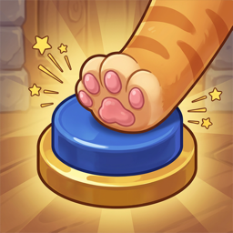

3×3 패드로 겨루는 실시간 순발력 대전
오류 신고, 제안, 부적절한 닉네임 신고는 이메일로 보내 주세요. 영업일 기준 3일 안에 답장드립니다.
오류를 알려 주실 때 기기 종류, 앱 버전, 일어난 시각, 내 닉네임을 함께 적어 주시면 빨리 확인할 수 있어요.
아니요. 앱을 처음 열면 계정이 자동으로 만들어집니다.
「방 만들기」로 방을 만들고 방 코드를 친구에게 알려 주세요. 친구는 「코드로 입장」에서 코드를 넣으면 됩니다. 한 방에 최대 100명까지 들어올 수 있어요.
「컴퓨터 대전」에서 컴퓨터 1–9명과 겨룰 수 있습니다. 실력은 쉬움·보통·어려움 중에서 고르고, 결과는 기록에 남지 않아요.
네. 모든 대전은 서버에서 판정하므로 컴퓨터 대전도 인터넷 연결이 필요합니다.
같은 기기라면 대부분 이어집니다. 기기를 바꾸거나 앱 데이터를 지우면 새 계정으로 시작될 수 있어요.
계정 삭제 안내를 보세요.